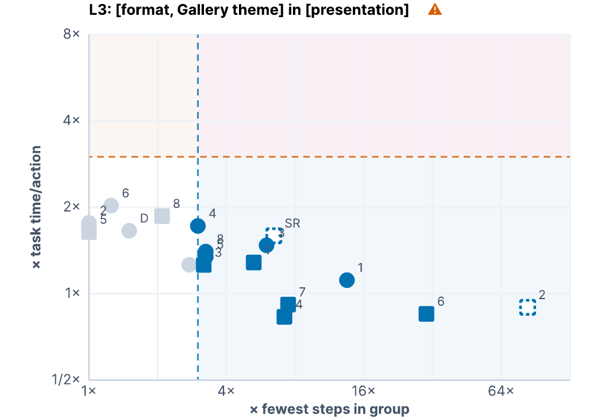

Comparing Computer Use Behavior Across Multiple Levels of Abstraction
UC Berkeley, University of Michigan
Under Review
Abstract
Interaction traces record how people and agents use computers, and comparing them can reveal usability barriers, differences in expertise, and human–agent similarity. Yet traces are recorded as low-level, interface-specific actions, making comparisons difficult across tasks, interfaces, and input modalities. Existing approaches either compare these actions directly, reduce traces to aggregate outcomes, or summarize them at higher-level goals, obscuring where behavior differs. We present MAP (Multi-level Action Parsing), a hierarchical semantic representation and annotation pipeline that maps traces into a common vocabulary across linked levels of abstraction. MAP compares traces by sequence, recurring patterns, and effort, localizing differences by type and abstraction level. A technical evaluation across three computer use datasets shows high agreement with manual annotations and broad coverage of behavior. Applying MAP shows that sighted and blind users increasingly converge at higher levels despite navigation differences, while agents omit corrective, help-seeking, and recovery behaviors present in human traces.
Our contributions
- MAP, a hierarchical semantic representation of interaction traces that labels recorded actions across four levels of abstraction, and an automatic pipeline that assigns these labels to interaction traces.
- A decomposition of behavioral similarity into three dimensions (sequence, recurring patterns, and effort allocation) computed over MAP labels at any level, so that behavioral differences can be localized by type and level of abstraction.
- A technical evaluation and comparative analysis using MAP, replicating and extending prior work comparing blind and sighted computer users, and assessing differences between human and agent traces.
![Overview of MAP's multi-level semantic representation and comparison metrics using an alarm-setting task. The center shows one interaction trace transformed from L1 Operations, such as keypresses, clicks, and pointing, into L2 Functions and Consequences, then L3 Methods such as opening the Clock application and adding an alarm, and finally the L4 Goal, 'Set up an alarm for 8:30 AM on Mondays.' Curved links show how lower-level actions contribute to higher-level labels. Callouts above illustrate questions that can be asked at different abstraction levels, such as which interaction behaviors are common among blind users or which Methods require the most effort. Callouts below illustrate MAP's three similarity metrics: Pattern Similarity identifies recurring behaviors, Sequence Similarity compares the order of interactions, and Effort Similarity compares where users spend actions and time.](media/teaser.png)
MAP transforms raw interaction traces into multi-level semantic representations (center), enabling comparison of user behavior
from low-level actions to high-level tasks. In this example, a user sets an alarm for 8:30 AM on Mondays: individual keypresses and
clicks (L1) are mapped to what they do in the interface (L2), grouped into methods such as open ⟨Clock⟩ in ⟨desktop⟩ and
add ⟨alarm⟩ in ⟨clock⟩ (L3), and finally into the task goal (L4). Given two traces, MAP supports comparisons between users
based on sequence alignment, effort allocation, and recurring behavioral patterns (bottom).
The MAP Taxonomy
Comparing traces is hard because they are recorded in a low-level, input- and interface-specific vocabulary. A screen reader user may press Tab six times while a sighted user points to reach the same button, yet their traces look completely different. MAP represents every trace at four connected levels, building on the decomposition used in GOMS while adding interface-level semantics in between. L1 and L2 Functions are assigned deterministically; the remaining fields are labeled by an LLM constrained to a fixed vocabulary, so only task-dependent fields remain open-vocabulary.
| Level | Definition | Examples |
|---|---|---|
| L1 Operations | Atomic input actions executed through mouse or keyboard. | primary click, scroll, keypress, shortcut |
| L2 Functions & Consequences | What an operation does, which UI element it acts on, and the resulting change to the interface. | select ⟨button⟩ → open ⟨dialog box⟩navigate ⟨link⟩ → focus ⟨link⟩ |
| L3 Methods & UI Containers | How a sub-goal is carried out within an application. The same method may be realized through different sequences of operations and functions. | edit ⟨paragraph⟩ in ⟨text document⟩add ⟨chart⟩ in ⟨spreadsheet⟩ |
| L4 Goals | The intended task outcome. A goal may span one or more applications. | Export spreadsheet as PDF Schedule a meeting |
Similarity Metrics
The taxonomy gives traces a shared vocabulary, but comparing users also requires specifying what aspect of their behavior is similar. MAP computes three complementary metrics, each at every abstraction level, so differences can be localized by both type and level.
- Sequence similarity: do two traces progress through a task in the same order? Computed with Needleman–Wunsch global alignment, which also shows which interactions are substituted, added, or omitted.
- Pattern similarity: do two traces show the same recurring local behaviors (e.g., hotkeys vs. point-and-click), even when their overall paths differ? Computed as cosine similarity over 1–3-gram frequency vectors.
- Effort similarity: do two users spend comparable actions and time on the same parts of a workflow? Formatting a document in 5 actions and 10 seconds vs. 15 actions and 40 seconds is semantically identical but differs in cost.
Technical Evaluation
We compared MAP's annotations against manual annotations of 2,342 actions across three computer use datasets spanning human and agent traces and sighted and screen reader interactions (A11y-CUA, AgentSynth, and AgentNet). MAP agrees with manual annotation on 77.3–87.3% of actions per semantic field, and 99.2% of actions across the full corpus receive a defined label rather than unknown, indicating that the vocabularies cover observed behavior. Most L3 errors reflect segmentation differences, and L2 errors rarely propagate to L3.
Results
We applied MAP to 30 tasks from the A11y-CUA dataset, performed by 8 sighted users (SU), 8 blind and low-vision users (BLVU), and two computer use agents (CUA-D with default access, and CUA-SR with a screen reader). We asked two questions from prior work: How do sighted and blind users differ in how they complete tasks with computers? and How closely do agent workflows align with human workflows?
![A 3-by-5 grid of pairwise similarity heatmaps. Rows show Sequence, Effort, and Pattern Similarity; columns progress from L1 Operations through two L2 representations, L3 Methods and UI Containers, and L4 Goals. Each heatmap compares eight sighted users, CUA-D, eight blind users, and CUA-SR, with darker green indicating greater similarity. At L1, and to a lesser extent L2, dark blocks appear within the sighted and blind groups while cells between groups are much lighter. These blocks become substantially less distinct at L3 and L4, where similarity is more uniform across users. CUA-D tends to resemble sighted users and CUA-SR blind users at the lower levels.](media/sim-matrices.png)
Pairwise Sequence, Effort, and Pattern similarity among SUs, BLVUs (labeled BU in the figure), CUA-D, and CUA-SR across MAP levels. Darker cells indicate higher similarity. Strong within-group blocks at L1 and L2 weaken at L3 and L4, showing that sighted and blind users differ more in low-level execution than in higher-level methods and goals.
![A 3-by-5 grid of PCA scatterplots compares sighted users, blind users, CUA-Default, and CUA-SR across three similarity metrics (rows: Sequence, Effort, Pattern) and five abstraction levels. At L1, sighted and blind users form clearly separated clusters, with the strongest separation for Effort and Pattern Similarity. Separation decreases across the two L2 columns and becomes weak at L3 and L4, where the points increasingly overlap. CUA-Default generally appears nearer the sighted-user cluster at lower levels, while CUA-SR generally appears nearer the blind-user cluster. Each panel reports a silhouette score and group-match count, which are highest at L1 and generally decline toward L3 and L4.](media/k-means-pca.png)
PCA projections of the same traces. SUs and BLVUs are strongly separated at L1 and L2 but increasingly converge at L3 and L4. Each panel reports the k-means (k=2) silhouette score and group-match count.
Key findings
| Level | Prior finding (confirmed by MAP) | New finding from MAP |
|---|---|---|
| Sighted vs. blind and low-vision users | ||
| L1 | SUs primarily use mouse input, whereas BLVUs use keyboard input. | BLVUs repeat similar keyboard-action patterns more consistently, but vary more in the overall order of their actions across tasks. |
| L2 | BLVUs frequently use sequential and exploratory navigation and multiple navigation strategies. | BLVUs require substantially more effort for navigation, while typing and selection are similar across groups. |
| L3 | BLVUs and SUs differ in how they formulate and reformulate search queries. | BLVUs write longer search queries but SUs query more often per task. Despite lower-level differences, both groups usually perform the same Methods to complete a task. |
| L4 | BLVUs adopt coping and recovery strategies when encountering accessibility barriers. | BLVUs more often add help-seeking goals, whereas SUs more often add verification and window-management goals. |
| Humans vs. agents | ||
| L1 | Agents differ from humans in low-level execution, and changing an agent's access mode changes its behavior. | Matching access mode does not guarantee human-like execution. |
| L2 | Screen reader use increases agent actions, and agents often type long inputs where humans navigate. | Humans interleave typing with navigation and screen reader management more often, whereas agents type uninterruptedly and then select UI targets. |
| L3 | Humans and agents can follow similar high-level steps despite different low-level execution. | CUA-D verifies more often than SUs, whereas SUs move and dismiss interface elements more often. Both agents perform Methods such as open and edit at similar rates to their human counterparts. |
| L4 | Humans and agents can pursue similar task goals despite differences in execution. | Agents usually reach the same primary goal as humans but omit additional goals such as help-seeking or closing extra windows and tabs. |
Applications

Beyond comparing groups, MAP's shared representation opens up several uses: surfacing efficient strategies from expert traces
to help novices improve, localizing usability problems on interfaces across tasks and users, and sharing a user's computer
use behavior without exposing their identity. The figure above shows a usability example: difficulty changing a PowerPoint theme. Each point
is one user's format Method, plotted by actions relative to the most efficient user and time per action relative to the user's usual pace.
Most difficulty comes from requiring many actions rather than performing them slowly.
MAP Explorer
The MAP Explorer shows MAP's multi-level representation for real traces. Pick one of 10 tasks and any two of the 8 sighted users, 8 blind and low-vision users, Default-CUA, or Screen-Reader-CUA to see their L1–L4 hierarchies side by side, aligned action by action, together with their Sequence, Pattern, and Effort similarity at each level.
🔎 Open the MAP ExplorerBibTeX
@article{mohanbabu2026map,
title={Comparing Computer Use Behavior Across Multiple Levels of Abstraction},
author={Mohanbabu, Ananya Gubbi and Natalie, Rosiana and Guo, Anhong and Pavel, Amy},
journal={arXiv preprint arXiv:2610.26703},
year={2026}
}